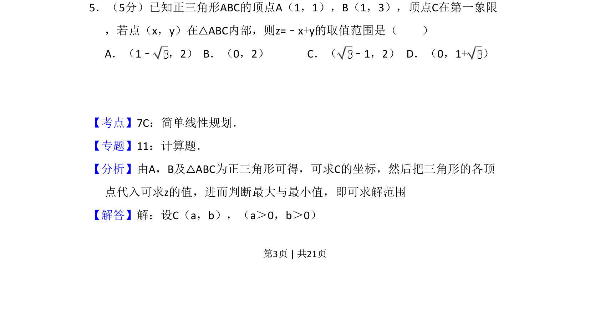
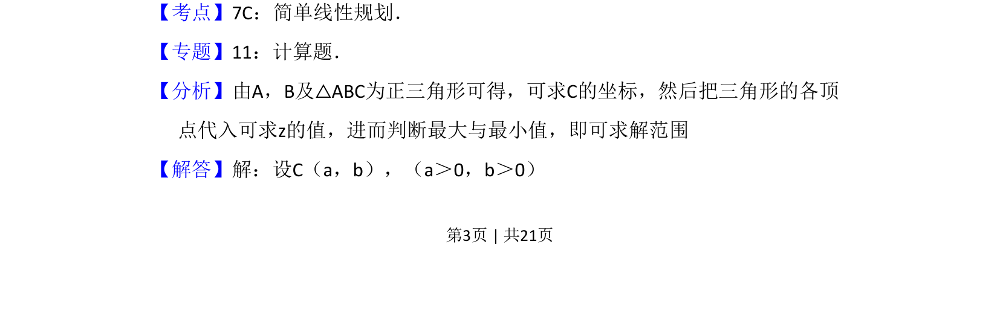
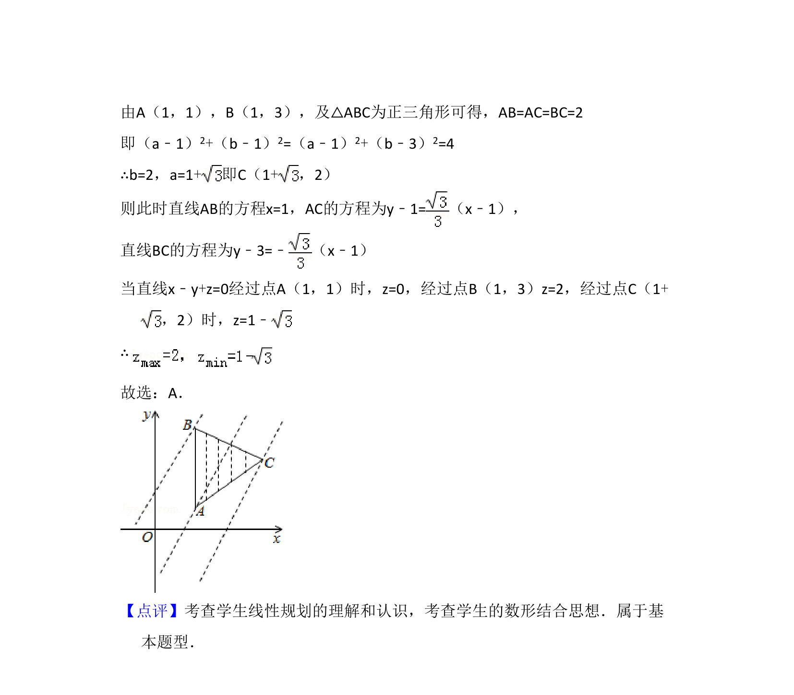

考点：线性规划 平面区域 目标函数最值

已知三角形顶点坐标，求内部点满足的线性目标函数取值范围，涉及简单线性规划


📄 原 PDF 第 3 页：
素材/真题/吉林/2008-2024·（吉林）数学高考真题/2012年高考数学试卷（文）（新课标）（解析卷）.pdf
5．（5分）已知正三角形ABC的顶点A（1，1），B（1，3），顶点C在第一象限 ，若点（x，y）在△ABC内部，则z=﹣x+y的取值范围是（ ） A．（1﹣ ，2）B．（0，2）C．（ ﹣1，2）D．（0，1+）
【考点】7C：简单线性规划．菁优网版权所有 【专题】11：计算题． 【分析】由A，B及△ABC为正三角形可得，可求C的坐标，然后把三角形的各顶 点代入可求z的值，进而判断最大与最小值，即可求解范围 【解答】解：设C（a，b），（a＞0，b＞0）